Ground Control · Volunteer · Account onboarding
Volunteer · Step 01
Welcome to Ground Control Choose Get started for a new account. Returning users choose Log in.
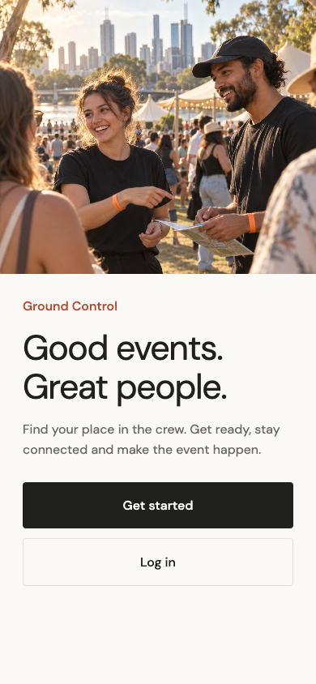
/
Demo capture · Mobile web · Operational state may be simulated Ground Control · Volunteer · Account onboarding
Volunteer · Step 02
Create the account: email Enter your email and continue.
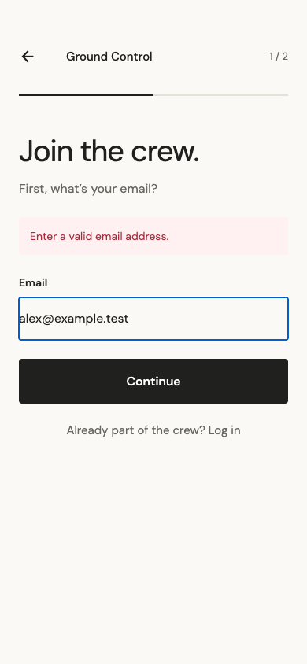
/sign-up
Demo capture · Mobile web · Operational state may be simulated Ground Control · Volunteer · Account onboarding
Volunteer · Step 03
Create the account: password Choose a password and create your account.
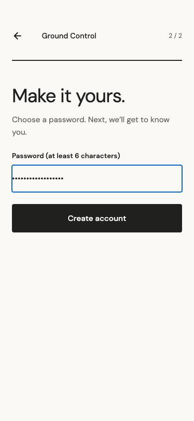
/sign-up
Demo capture · Mobile web · Operational state may be simulated Ground Control · Volunteer · Account onboarding
Volunteer · Step 04
Confirm the signup email Open the confirmation email, then return to log in. The email itself is outside the app.
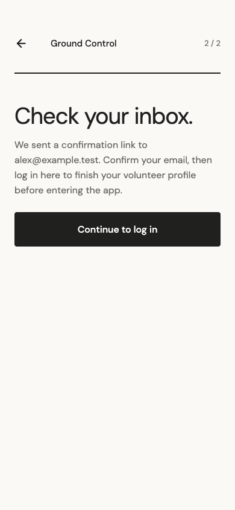
/sign-up
Demo capture · Mobile web · Operational state may be simulated Ground Control · Volunteer · Account onboarding
Volunteer · Step 05
Log in after email confirmation Return after confirming the signup email and enter your email.
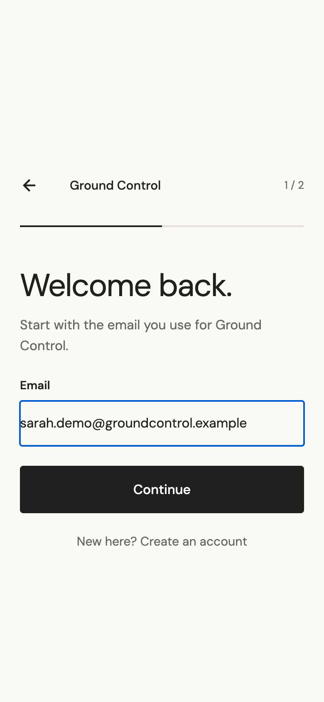
/sign-in
Demo capture · Mobile web · Operational state may be simulated Ground Control · Volunteer · Account onboarding
Volunteer · Step 06
Authenticate Enter your password to continue. The password is masked.
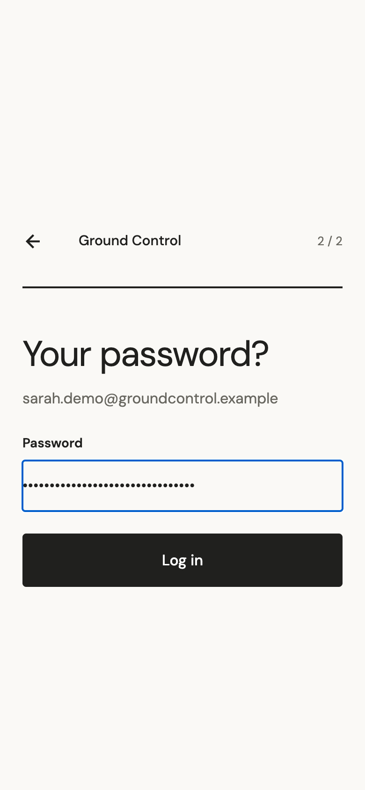
/sign-in
Demo capture · Mobile web · Operational state may be simulated Ground Control · Volunteer · Account onboarding
Volunteer · Step 07
Account onboarding: name Enter the name teammates should use.
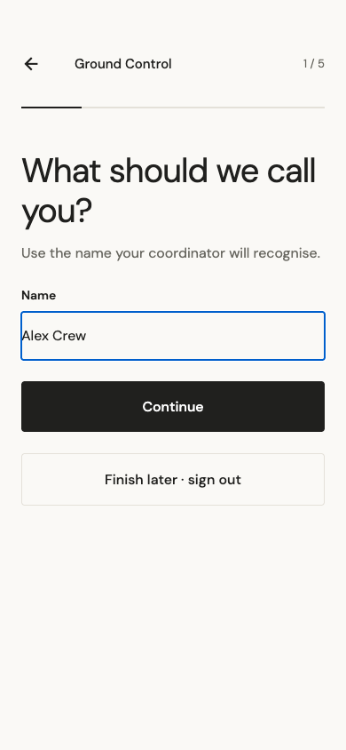
/profile-onboarding
Demo capture · Mobile web · Operational state may be simulated Ground Control · Volunteer · Account onboarding
Volunteer · Step 08
Account onboarding: phone Add a contact phone number.
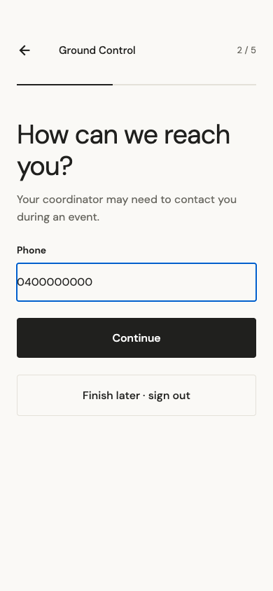
/profile-onboarding
Demo capture · Mobile web · Operational state may be simulated Ground Control · Volunteer · Account onboarding
Volunteer · Step 09
Account onboarding: emergency contact Add an emergency contact name and phone number.
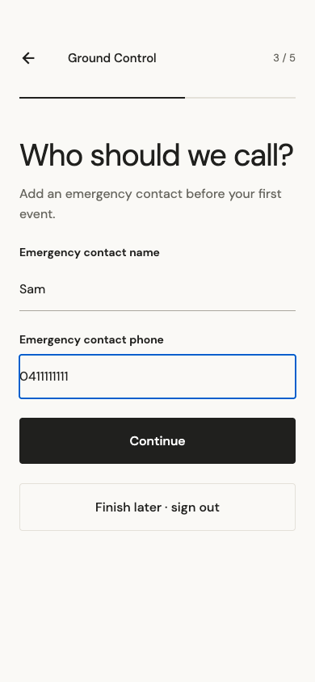
/profile-onboarding
Demo capture · Mobile web · Operational state may be simulated Ground Control · Volunteer · Account onboarding
Volunteer · Step 10
Account onboarding: experience Choose whether this is your first event or you have crewed before.
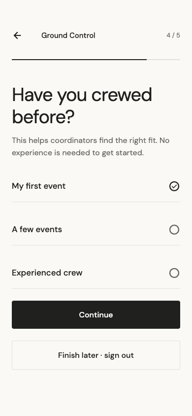
/profile-onboarding
Demo capture · Mobile web · Operational state may be simulated Ground Control · Volunteer · Account onboarding
Volunteer · Step 11
Account onboarding: ready Review the saved setup and continue to Find my first event.
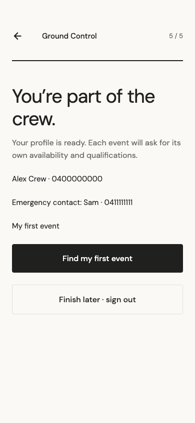
/profile-onboarding
Demo capture · Mobile web · Operational state may be simulated Ground Control · Volunteer · Join and prepare for the event
Volunteer · Step 12
Volunteer home Start with the current assignment or join your first event.
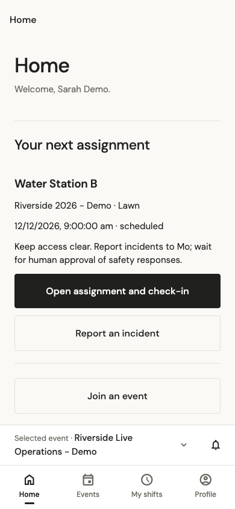
/volunteer
Demo capture · Mobile web · Operational state may be simulated Ground Control · Volunteer · Join and prepare for the event
Volunteer · Step 13
Enter the event code Use the join code supplied by the coordinator.
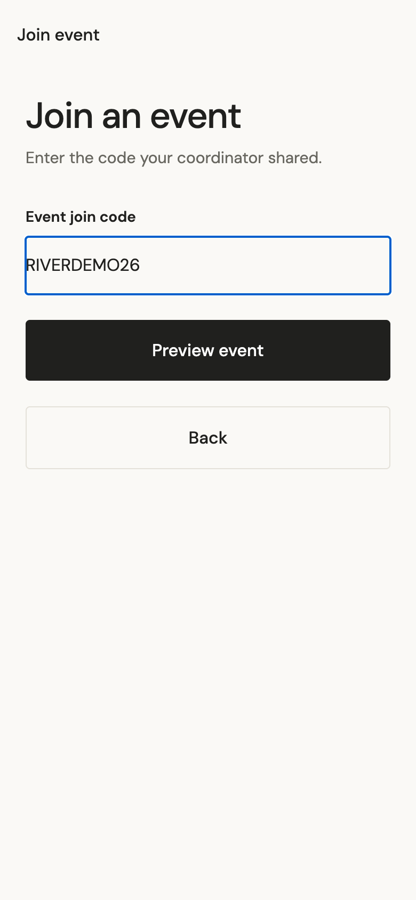
/join
Demo capture · Mobile web · Operational state may be simulated Ground Control · Volunteer · Join and prepare for the event
Volunteer · Step 14
Confirm the event Check the event name, location and dates before joining.
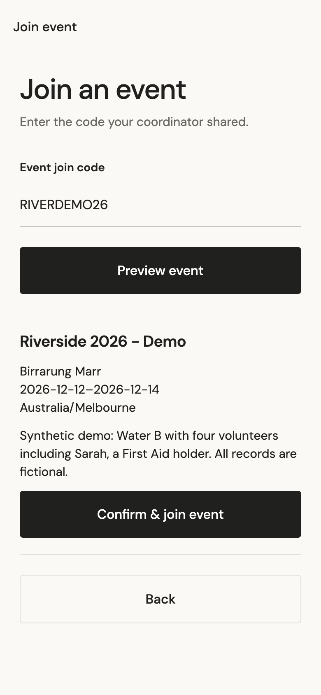
/join
Demo capture · Mobile web · Operational state may be simulated Ground Control · Volunteer · Join and prepare for the event
Volunteer · Step 15
Event onboarding: welcome Review this event and start Let’s get ready.
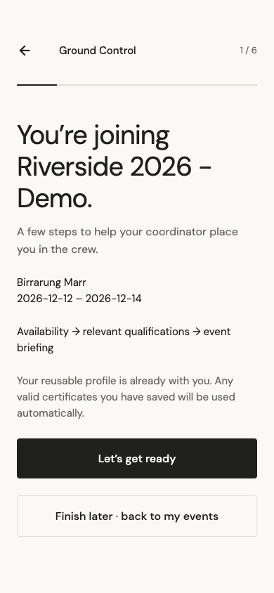
/events/[id]/onboarding
Demo capture · Mobile web · Operational state may be simulated Ground Control · Volunteer · Join and prepare for the event
Volunteer · Step 16
Event onboarding: availability Add the local time windows when you can volunteer.
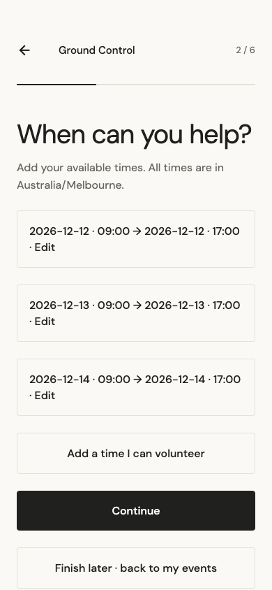
/events/[id]/onboarding
Demo capture · Mobile web · Operational state may be simulated Ground Control · Volunteer · Join and prepare for the event
Volunteer · Step 17
Event onboarding: hours and preferences Set desired hours. Expand optional limits and preferences as needed.
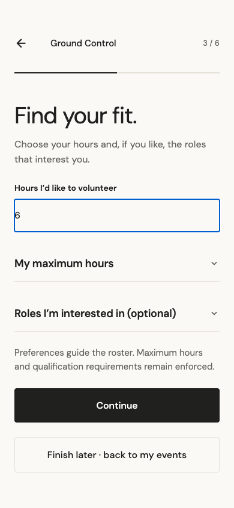
/events/[id]/onboarding
Demo capture · Mobile web · Operational state may be simulated Ground Control · Volunteer · Join and prepare for the event
Volunteer · Step 18
Event onboarding: qualifications Check the event’s qualification requirements. Upload evidence when needed; an unverified certificate does not make you eligible for a qualified post.
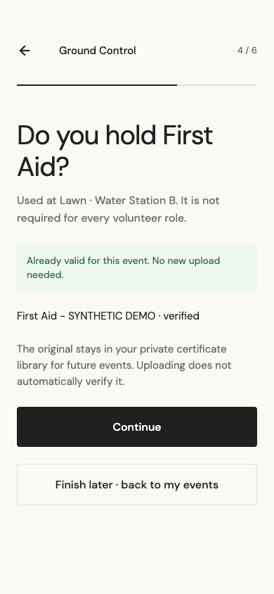
/events/[id]/onboarding
Demo capture · Mobile web · Operational state may be simulated Ground Control · Volunteer · Qualification evidence when required
Volunteer · Step 19 · When needed
Choose certificate evidence Select the original certificate, name it and save it for extraction and human review.
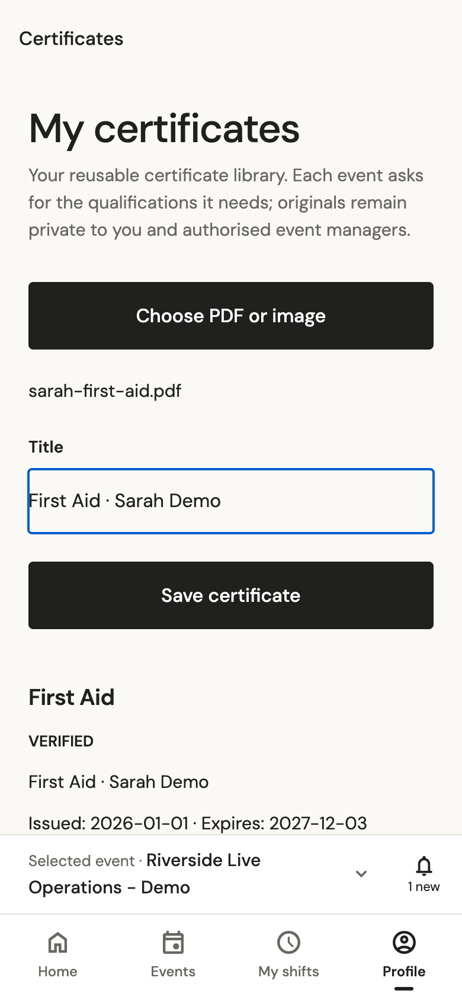
/certificates
Demo capture · Mobile web · Operational state may be simulated Ground Control · Volunteer · Qualification evidence when required
Volunteer · Step 20 · When needed
Evidence saved; review required The original is saved; extracted fields require human review before qualification use.
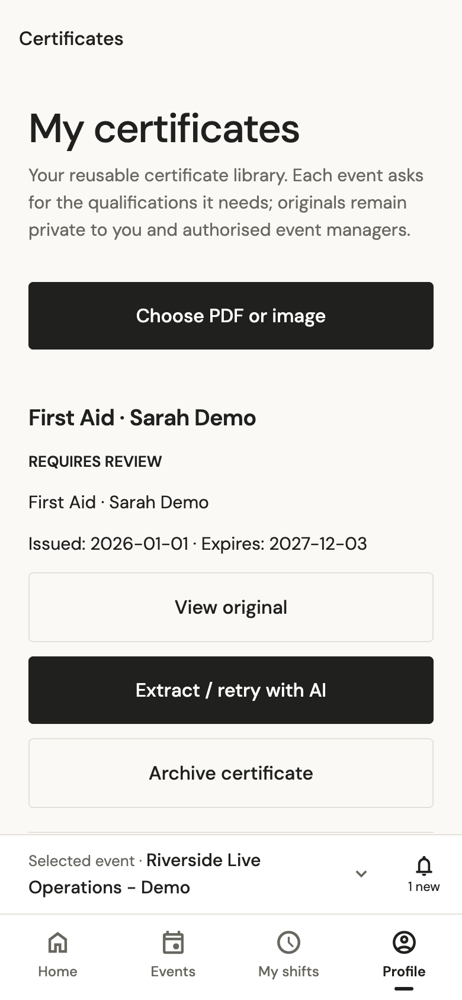
/certificates
Demo capture · Mobile web · Operational state may be simulated Ground Control · Volunteer · Review events, availability and shifts
Volunteer · Step 23
Your events Review joined events. Past events are a separate expandable group.
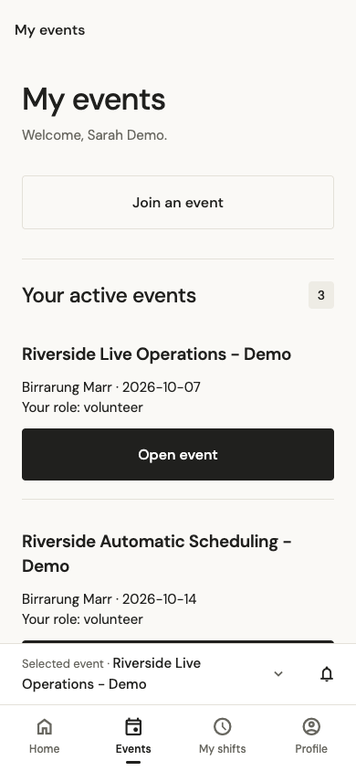
/my-events
Demo capture · Mobile web · Operational state may be simulated Ground Control · Volunteer · Review events, availability and shifts
Volunteer · Step 24
Switch the selected event Choose which event your shifts and event tools belong to.
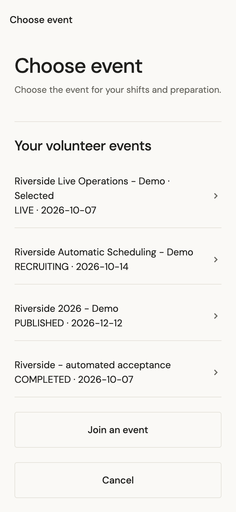
/choose-event
Demo capture · Mobile web · Operational state may be simulated Ground Control · Volunteer · Review events, availability and shifts
Volunteer · Step 25
Update availability and preferences Change availability before roster generation and review event instructions.
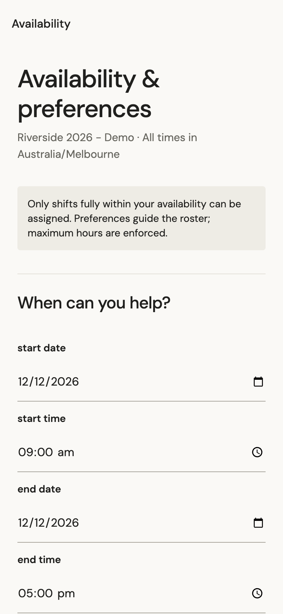
/events/d0000000-0000-4000-8000-000000000001/availability
Demo capture · Mobile web · Operational state may be simulated Ground Control · Volunteer · Review events, availability and shifts
Volunteer · Step 26
Published shifts Review time, location, instructions, supervisor and escalation contact.
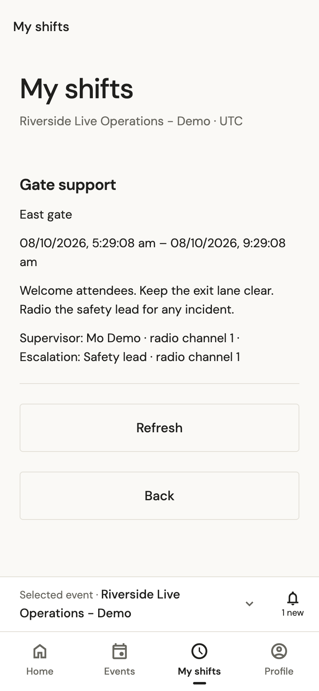
/events/d1000000-0000-4000-8000-000000000001/schedule
Demo capture · Mobile web · Operational state may be simulated Ground Control · Volunteer · Review events, availability and shifts
Volunteer · Step 27
Event and current assignment See your current assignment, incident reporting and event preparation.
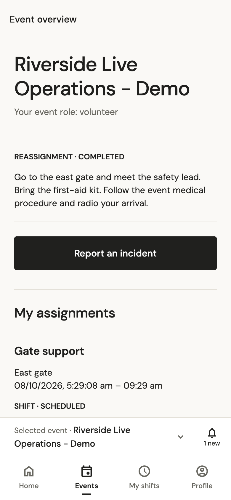
/events/d1000000-0000-4000-8000-000000000001
Demo capture · Mobile web · Operational state may be simulated Ground Control · Volunteer · Arrive and work your shift
Volunteer · Step 28
Arrive and check in Check in to the current assignment so the coordinator sees coverage.
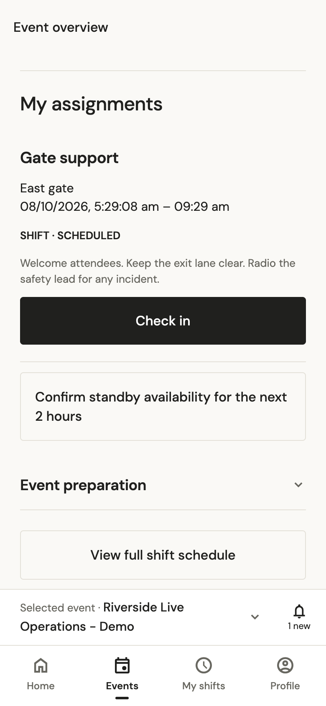
/events/d1000000-0000-4000-8000-000000000001
Demo capture · Mobile web · Operational state may be simulated Ground Control · Volunteer · Arrive and work your shift
Volunteer · Step 29
Check-in confirmed Your assignment now shows checked in.
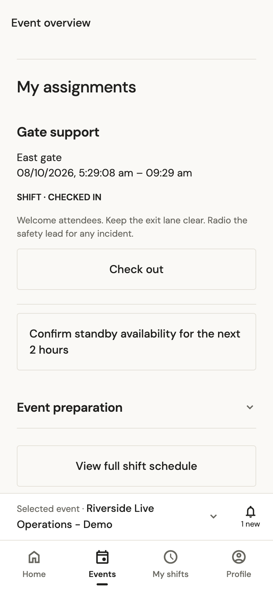
/events/d1000000-0000-4000-8000-000000000001
Demo capture · Mobile web · Operational state may be simulated Ground Control · Volunteer · Report an incident when needed
Volunteer · Step 30 · When needed
Report an incident Give the location, what happened and urgent details; typing and voice are available.
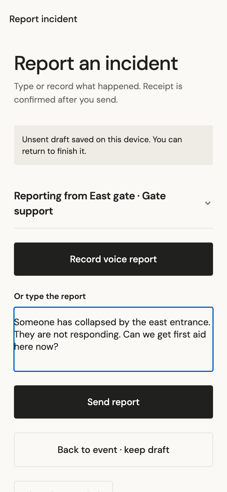
/events/d1000000-0000-4000-8000-000000000001/incident
Demo capture · Mobile web · Operational state may be simulated Ground Control · Volunteer · Report an incident when needed
Volunteer · Step 31 · When needed
Record a voice incident Speak the location, what happened and anything urgent. Browser microphone input is simulated.
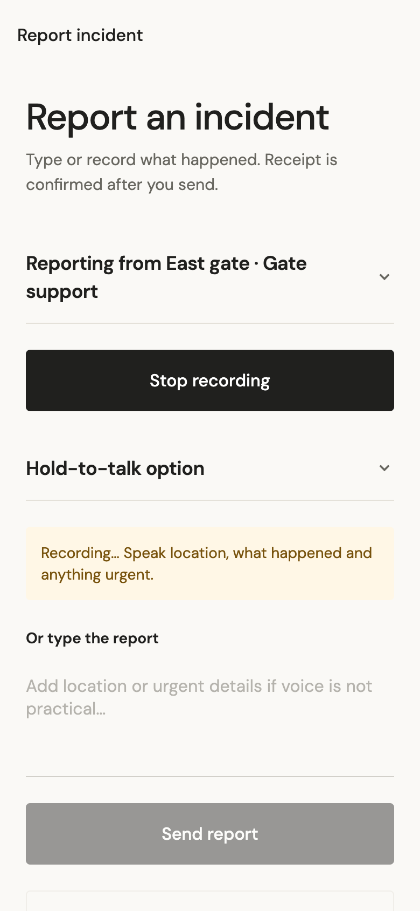
/events/d1000000-0000-4000-8000-000000000001/incident
Demo capture · Mobile web · Operational state may be simulated Ground Control · Volunteer · Report an incident when needed
Volunteer · Step 32 · When needed
Review the voice report before sending Add written context if helpful. This capture does not send or transcribe the recording.
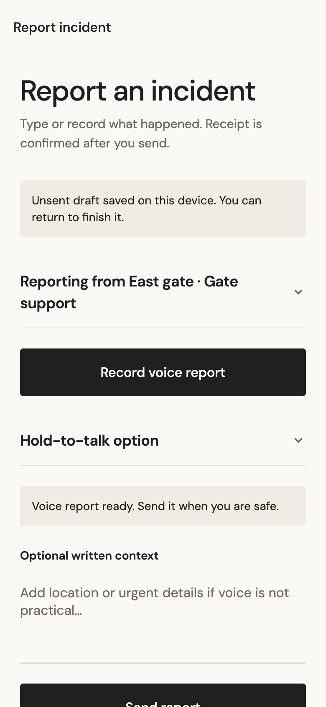
/events/d1000000-0000-4000-8000-000000000001/incident
Demo capture · Mobile web · Operational state may be simulated Ground Control · Volunteer · Report an incident when needed
Volunteer · Step 33 · When needed
Report received; AI follows Receipt is shown before AI analysis; the original report is retained.
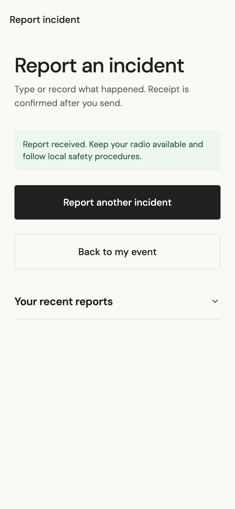
/events/d1000000-0000-4000-8000-000000000001/incident
Demo capture · Mobile web · Operational state may be simulated Ground Control · Volunteer · Carry out an approved response when requested
Volunteer · Step 36 · When needed
Receive an approved instruction Read the coordinator-approved reassignment; accept or decline.
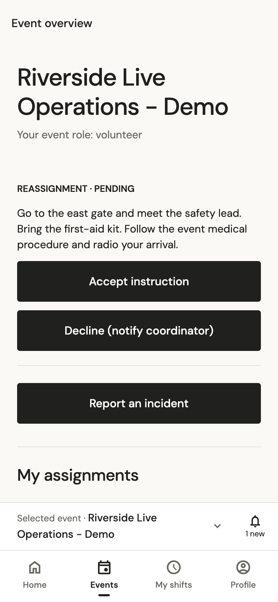
/events/d1000000-0000-4000-8000-000000000001
Demo capture · Mobile web · Operational state may be simulated Ground Control · Volunteer · Carry out an approved response when requested
Volunteer · Step 37 · When needed
Acknowledge the instruction Tell the coordinator you accepted the task.
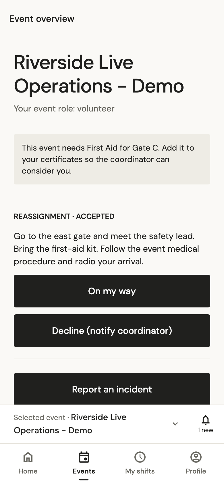
/events/d1000000-0000-4000-8000-000000000001
Demo capture · Mobile web · Operational state may be simulated Ground Control · Volunteer · Carry out an approved response when requested
Volunteer · Step 38 · When needed
Travel to the destination Update your progress when you are on the way.
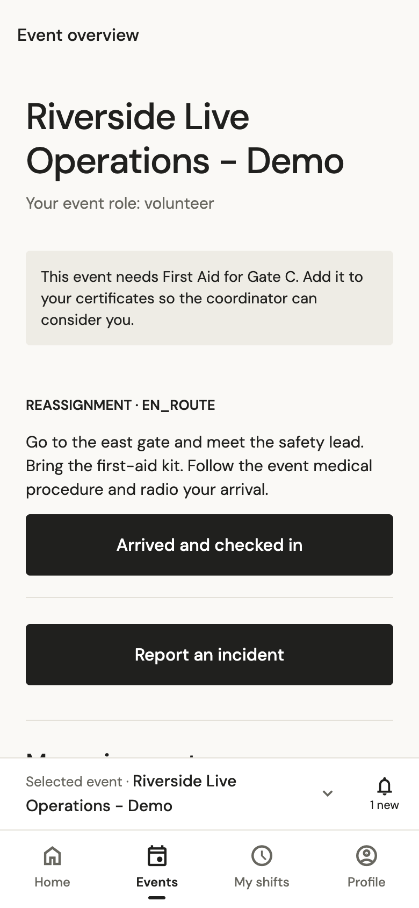
/events/d1000000-0000-4000-8000-000000000001
Demo capture · Mobile web · Operational state may be simulated Ground Control · Volunteer · Carry out an approved response when requested
Volunteer · Step 39 · When needed
Confirm arrival Arrival tells the coordinator the response is on site.
/events/d1000000-0000-4000-8000-000000000001
Demo capture · Mobile web · Operational state may be simulated Ground Control · Volunteer · Carry out an approved response when requested
Volunteer · Step 40 · When needed
Finish the response task Mark the task complete and await further instructions.
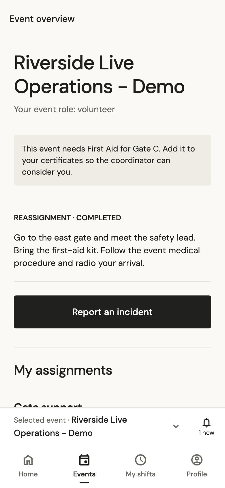
/events/d1000000-0000-4000-8000-000000000001
Demo capture · Mobile web · Operational state may be simulated Ground Control · Volunteer · Maintain your account between events
Volunteer · Step 42 · When needed
Profile and emergency details Keep contact details, emergency contact and certificates up to date.
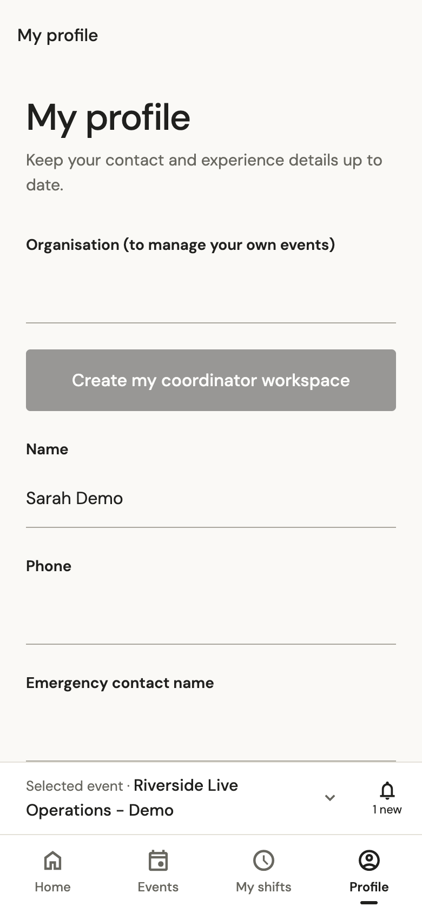
/profile
Demo capture · Mobile web · Operational state may be simulated Ground Control · Volunteer · Maintain your account between events
Volunteer · Step 43 · When needed
Reusable certificate library Upload qualifications once; each event checks its own requirements.
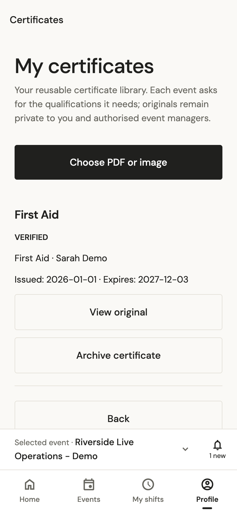
/certificates
Demo capture · Mobile web · Operational state may be simulated